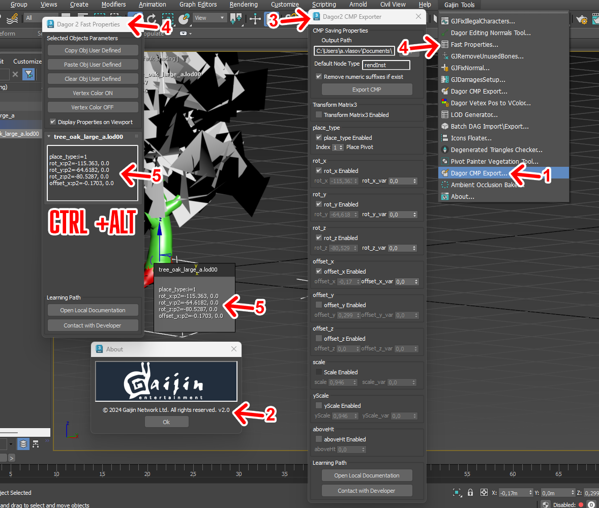
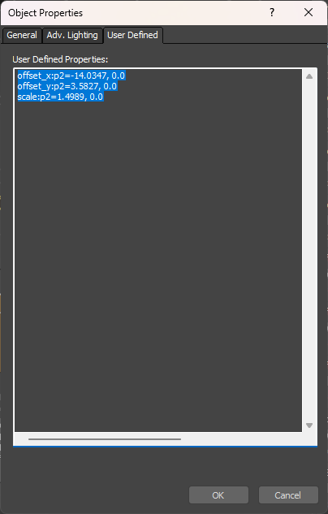

Dagor Simple CMP Editor
Caution
This tool is currently under development.
Installation
Install the script following the provided instructions.
Requirements
This script requires:
3ds Max 2021 or later.
Plugin version 1.8 or higher.
The Dagor Fast Editor User Properties, included in the toolbox.
Accessing Simple CMP Editor
To get started, ensure that your toolbox is up to date.
Then, drag and drop dagor_CMP_GeneratorSimple.ms into the Viewport.
Press
Ctrl+Shiftto open the floating panel:
Closing the panel by pressing X disables this editor completely. To return the toggle behavior, reopen the editor from the Gaijin Tools > Dagor Fast Properties…
To open the main window of the Dagor CMP Exporter, navigate to Gaijin Tools > Dagor CMP Exporter… 1.
To verify the version 2 of the script, go to Gaijin Tools > About. The About window will display the current version. It’s important to check this regularly to ensure your script is up to date.

{kind=link}
{kind=link}
Using Simple CMP Editor
All node properties are stored in Object Properties. The script automatically updates these properties when the position, rotation, or scale of an object changes. Below is an example:
{kind=link}
Always use the CMP Exporter to edit properties. The following is a list of currently supported properties:
Supported Properties
Property |
Example |
Description |
|---|---|---|
place_type:i |
place_type:i = 1 |
“No Collision Type”=0 “Place Pivot”=1 “Place Pivot and use Normal”=2 “Place 3-point (bbox)”=3 “Place Foundation (bbox)”=4 “Place on Water (flootable)”=5 “Place Pivot with Rendinst Collision”=6 |
rot_x:p2 |
rot_x:p2=90, 2 |
Rotates the node 90° on the chosen axis, then applies a random angle between -2° and 2° |
rot_y:p2 |
rot_y:p2=0, 30 |
Rotates the node randomly on the chosen axis between -30° and 30° |
rot_z:p2 |
rot_z:p2=90, 2 |
Rotates the node 90° on the chosen axis, then applies a random angle between -2° and 2° |
offset_x:p2 |
offset_x:p2=1, 2 |
Moves the node 1 unit along the x-axis, then randomly between +/-2 units |
offset_y:p2 |
offset_y:p2=1, 2 |
Moves the node 1 unit along the y-axis, then randomly between +/-2 units |
offset_z:p2 |
offset_z:p2=1, 2 |
Moves the node 1 unit along the z-axis, then randomly between +/-2 units |
scale:p2 |
scale:p2=1.5, 0.1 |
Uniformly scales the node to 1.5, with variation in the range [-0.1 .. 0.1] |
yScale:p2 |
yScale:p2=1, 0.1 |
Alters the node height by a value in the range [-0.1 .. 0.1] |
tm:m |
tm:m=[[1.0, 0.0, 0.0] [0.0, 1.0, 0.0] [0.0, 0.0, 1.0] [0.0, 0.0, 0.0]] |
Non-randomized location, rotation, and scale |
aboveHt:r |
aboveHt:r=0.0 |
Specifies a fixed height above the surface |
The script does not affect manually entered properties not listed above. The animation below shows that when you change the parameters, unsupported properties of the collision object remain untouched, example:
Important
Only one selected object can be edited at a time. If you select more than one object, the CMP Exporter interface will be greyed out and unavailable for parameter editing. This is intentional to prevent damaging or erasing properties of different objects.
However, objects can be moved, rotated, or scaled in selected groups. When the script runs, it automatically updates all parameters inside user custom properties for all selected objects. If the script is not run during editing, parameters will automatically update when you press the Export CMP button. Alternatively, run the script and select an object to update its parameters automatically.
Important
If an object does not already have any CMP properties, default properties such
as Matrix3 and Place type will be automatically assigned. Note that only
Editable Mesh or Editable Poly objects can have CMP settings. For non-editable
objects, the interface will be greyed out and unavailable for editing.
For example, create a box and select it when the script window is open. The whole interface will be grey because it is not an Editable Mesh or Editable Poly.
It will look like this (only node name and Matrix3):
node{
name:t="ancient_statue_c_dmg_056_dmg:rendInst"
tm:m=[[0.606621, 0.0, 0.0105886] [0.000184797, 0.606621, -0.010587] [-0.010587, 0.0105886, 0.606528] [-0.211369, 3.01566, 0.255796]]
}
Important
All objects in the scene must have the same scale on all axes.
If an object is not uniformly scaled along all axes, a warning will appear, suggesting correction:
{kind=link}
The script will not correct this error; it leaves the decision to your discretion. However, every time such an object is selected while the script is running, a warning will appear.
CMP Editor Interface
Let’s consider the functionality of the script interface:
{kind=link}
Output Path 1: specify the path where the
.composit.blkfile will be saved after export. Button 2 allows you to select a custom path. On first use, this will default to the 3ds Max export path.Default Node Type 3: set the default node type. If the name contains some gross errors like invalid characters, the script will indicate an error of the form:
Remove numeric suffixes if exist 4: if enabled, removes the last three digits from object names during export. For example,
ancient_statue_c_dmg_087will be exported asancient_statue_c_dmg_. This is useful since objects in 3ds Max often include numbers that are unnecessary in the final composite file.Export CMP 5: exports objects to the specified directory. All objects in the current active layer will be exported. Recall that the active layer is the layer highlighted by the blue folder
For example, a layer
is exported to
ancient_statue_c_dmg_cmp.composit.blkat the specified path.Ensure the active layer is named correctly; otherwise, a warning will appear:

{kind=link}
{kind=link}
{kind=link}
Next are parameters to export from 3ds Max to Dagor:
Transform Matrix3 Enabled 6: exports the transformation matrix (position, rotation, scale) to Dagor’s format.
See also
For more information, see Transformation matrices.
place_type Enabled 7: enables object placement type in Dagor. There are seven different placement methods, which your mentor can explain in detail.
Parameter block 8: responsible for randomizing node rotations along the x, y, z axes.
Example:
Important
If any checkbox for
rot_x,rot_y,rot_z,offset_x,offset_y,offset_z,scale, oryScaleis enabled, theMatrix3parameter will be unavailable.This limitation is intentional and adheres to Dagor Engine requirements.
Parameter block 9: responsible for randomizing node offsets along the x, y, z axes relative to the current position.
Scale Enabled 10: enables randomization of node scaling from the base scale value within the specified range.
yScale Enabled 11: enables randomization of scaling along the Y-axis (Z-axis in 3ds Max, which is up in Dagor).
aboveHit Enabled 12: enables fixed node positioning above the surface by the specified value in the
aboveHtparameter.
As the Dagor Engine evolves, new parameters may be added or existing ones modified. Always refer to the updated table of parameters.
Note
This script is complex, functioning as an editor within the 3ds Max editor. It may contain bugs or errors. If you encounter any strange behavior or issues, do not try to resolve them yourself. Report them to the developer immediately to save time and facilitate quick fixes.
Open Local Documentation 13: links to this documentation.
Contact with Developer 14: provides contact information for the developer if assistance is needed.